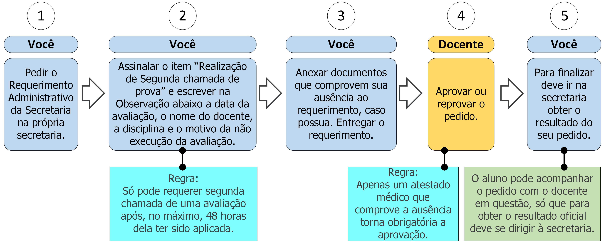

11. Realização de segunda chamada de prova

11.1 Descrição
Após a realização de uma avaliação pode ser requerida segunda chamada da mesma em caso de ausência. Para isso você deve seguir os seguintes passos:
- A. Peça o Requerimento Administrativo da Secretaria;
- B. Assinale o item “Realização de Segunda chama de prova” e escreva no campo Observação a data da avaliação, o nome do docente, a disciplina e o motivo da não execução da avaliação (ver regra 1 na seção 11.3);
- C. Anexe os documentos (ver documentos na seção 11.2) ao requerimento, caso haja;
- D. Entregue o requerimento;
- E. O docente avaliará a possibilidade de segunda chamada (ver regra 2 na seção 11.3);
- F. Vá à secretaria e procure saber sobre o resultado do seu requerimento (ver regra 3 na seção 11.3).
11.2 Documentos necessários
- Pode ser utilizado qualquer documento como comprovante de ausência da avaliação, só que apenas um atestado médico que comprove a ausência tornará obrigatória a aprovação do pedido. Outros cenários (como comprovantes de participação em evento científico da área, etc.) serão avaliados particularmente dependendo do docente.
11.3 Regras
- 1. Período para requerer segunda chamada: Só se pode requerer segunda chamada de uma avaliação após, no máximo, 48 (quarenta e oito) horas dela ter sido aplicada.
- 2. Atestado médico: Apenas um atestado médico que comprove a ausência torna obrigatória a aprovação.
- 3. Prazo de efetivação: A Secretaria e o docente têm até 7 dias úteis efetivar a avaliação do pedido de realização de segunda chamada de prova.